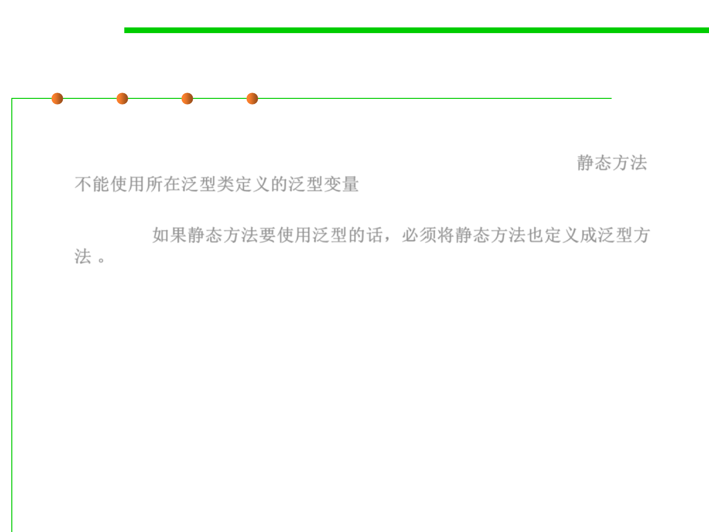

Generics in Java
3.4 Object-Oriented Programming (OOP)
▪ Generic method and static method
– Static method cannot use generic variable defined in class level. 静态方法
不能使用所在泛型类定义的泛型变量
– If static methods are to use generics, they must also be defined as generic
methods. 如果静态方法要使用泛型的话，必须将静态方法也定义成泛型方
法。
/**
* Create an empty graph.
*
* @param <L> type of vertex labels in the graph, must be immutable
* @return a new empty weighted directed graph
*/
public static <L> Graph<L> empty() {
……
}